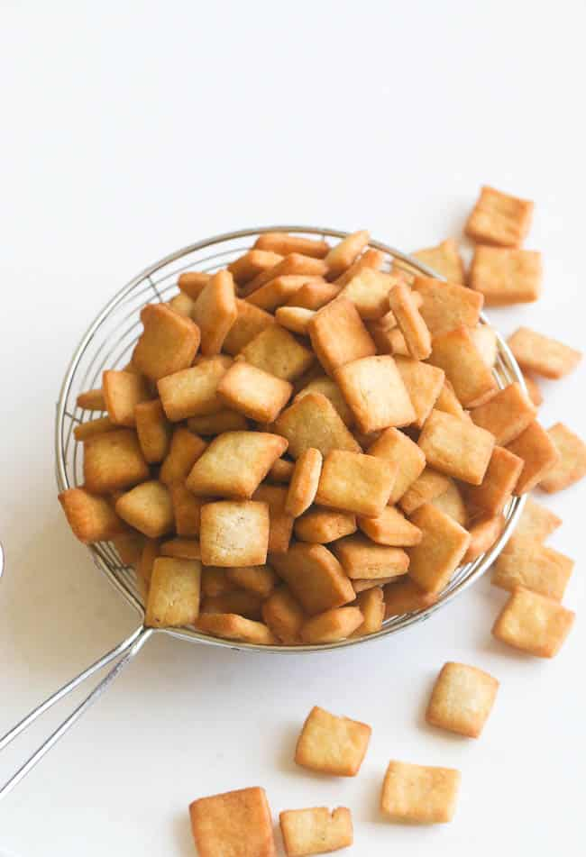

Chin chin

Description
Chin chin is a West African Fried pastry enjoyed thoughout the region especially in Nigeria. It is crispy, crunchy and addictive.
Prep time: 30mins
Cook time: 30mins
Servings: 6
Ingredients
- 3 1/2 cup of all-purpose flour
- 3/4 cups of sugar
- 1/4 teaspoon of baking powder
- 1/2 teaspoon of salt
- 1 large egg
- 3/4 cup of milk
- vegetable oil for frying
- 2 mashed ripe bananas
- 1/4 cup or 4 tablespoons of magarine/butter
- 1 teaspoon of grated nutmeg
Steps
- Using a mixer or by hand mix the dry ingredients; flour, baking powder, salt, sugar and nutmeg.
- Add the butter to flour and mix well until the butter is well incorporated with the flour.
- Add milk and egg into the mixture. Keep mixing until you have formed a sticky dough ball.
- Dump the dough ball onta a floured surface and knead, incorporating more flour into the dough as needed, until the dough is smooth, elastic and even in color and no longer sticky. Chin chin can be cut into many shapes and sizes.
- Divide dough in half. On a floured board roll each half about 1/6 inches thick. You can make it easy by using a pasta machine if you have one available and make shapes as desired.
- Add oil (about 3 inches deep) to a heated shillet/sauce pan and bring it to 375 degrees.
- Fry in hot oil until golden. Remove from oil, drain and serve.